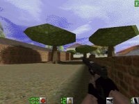
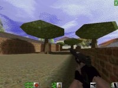
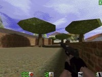

Map name: Cracked
Map author: Wanderer
Map filename: cracked.zip
Reviewed by: The Rookie, GookNFresh, ==>Shaft<==, Violent Marv, netmarine

Architecture & Layout score = 9/10
Commentary:
The layout of cracked is great. It has the architecture of a real house, complete
with stairs down to the basement. The external entrance of the basement makes
for interesting situations. The trees are layed out nicely, equally spaced like
they would be. The lawn is complete with a sidewalk and street.
How It Looks score = 10/10
Commentary:
This map looks great right off the start. It has a great background sky file,
making it fit in with the Californian theme. The trees are the best looking
Quake 2 ones yet. The house is complete with smuggling crates, furnace, television,
toilet and tables (tables are able to be flipped over for cover). The outside
has a short brick wall surrounding it on all sides. Nice looking!
Gameplay (fun factor) score = 9/10
Commentary:
Super gameplay. This map provides for many interesting situations. It is a good
handcannon map as well as a good M4/MP-5 map. The house itself is a good place
for one or two team members to hold out in, as footsteps and opening doors can
be heard easily. Outside of the house requires longer ranged equipment, as many
of the encounters are one edge to another. The size of the map itself is not
large, but the fact that the house is present greatly increases the area of
the map itself. Action is fast and furious, the team controlling the roof usually
has an early advantage.
Ambiance score = 9/10
Commentary:
The map simulates a real-life scenario, raiding a house. It is right on line
with the Action Quake theme, real-life places and conflict areas. It gives the
idea that the player is actually in a take down, and the team must clear out
each area, inside and outside of the house. Within the house screams from the
outside are audible, and so are the loud reports of the various weapons in AQ.
This map has a great mood!
Other:
Hell, this map just kicks ass. This has to be one of the first maps to incorporate
a themed sky and a realistic layout. I won't mind to see another map by this
author.
Conclusion:
This map has to be one of the greatest maps as far as the Action theme is concerned.
This map is a great team effort map, allowing for teams of two and three to
clear out parts of the house. Great map Wanderer!
Overall score: = 10/10
Reviewed by netmarine
Architecture & Layout score = 6/10
Commentary:
Well, unlike the other reviewers, I don't care too much for this map. Its only
ok. However, its simplicity is not too bad. I like the house and its layout.
The outside is also layed out fairly nice with sufficient cover. Overall, its
interesting but nothing spectacular.
How It Looks score = 8/10
Commentary:
Now this is one area it shines. This map looks pretty sharp. The textures work
for it and everything seems to fit. The only problem I have is that its a bit
too bright outside.
Gameplay (fun factor) score = 4/10
Commentary:
This is my biggest gripe. I enjoy the inside of the house a lot. Manipulating
items is a nice feature. One annoying thing about the inside, however, is that
doors/hatches close fast. I rarely get through one the first try. Then, as soon
as I go outside, it becomes a slide show as the lag hits me. For a fairly small,
simple map, this one lags bad outside. I think the trees are the culprits. I
don't know much about mapping but he might have used a lot of clipping to get
the trees' look. Clipping is very bad for lag. Also, sniping is nearly nonexistant
unless you're one of those running snipers.
Ambiance score = 5/10
Commentary:
Well, this map has a weird feel. To me, it looks like a Dr. Suess(sp?) nightmare.
The colors, textures, and especially trees give it that feel. Not that its wrong
but isn't this supposed to be a crack house or something?
Conclusion:
In the end, this map is in the middle of the road for me. If it wasn't for the
lag outside, tricky doors, and the lack of sniping, this would be a better map.
That lag is the real killer for me though.
Overall score: = 5/10
Reviewed by Violent Marv
Architecture & Layout score = 9/10
Commentary:
Pro: Wow! Very nice, uncluttered yet "furnished" layout. Very original as well.
I like how Wanderer cut off the edge of the roof to make a "\" slant. I haven't
seen that yet. Also I like how you made the trees and shrubs. Just a very nice
layout overall. Con: There is a place on the edge where there is nothing separating
the sky texture from the ground. This makes the player seem to be on some sort
of cliff or something when he is standing there suspended over the bottom of
the *cough* sky texture. Maybe Wanderer was trying to merge the street in the
map with the street in the sky texture but my Software 300x400 resolution cant
tell. oh well
How It Looks score = 6/10
Commentary:
This is likely due to my lousy computer, but it doesnt look that good. First
of all, much too bright. At the beginning of maps like these (urban2,jungle1&2),
I almost mechanically type "sky space1" or some other sky tex like stars
or snow in the console because it is just too bright. But this is merely
personal preference and it is easily adjustable for everyone,(but this is
not everyone's review). Once that is "fixed" though, it looks great!
Gameplay (fun factor) score = 10/10
Commentary:
Are you sure I can't put eleven? ;) This map has a brilliant mixture of
function and layout that makes it a helluvalotafun (yes one word). Function
can basically be defined as ducking behind fences and running through a
house knocking over tables. Also, this map adds a bit of strategy because
almost everywhere you look there is a door or a hatch or something. This
map goes beyond other popular maps such as actcity2(4 doors), urban(1 door),jungle(Nothing
moveable or activatable whatsoever). I am glad that mappers like Wanderer
are getting back to the basics ADD A DOOR TO ANY MAP THAT ANY OF YOU MAPPERS
ARE WORKING ON trust me you'll feel better. There are multiple ways to get
into almost every area. This map reminds me of the id dm and ctf maps in
that it has very nice "flow"
Ambiance score = 10/10
Commentary:
Yeah uh.. ahem This map accurately depicts a house in a neighborhood. I
would hate to have to mow that lawn though.
Conclusion:
Aside from the sky texture, this map is almost perfect. I hope to see more
maps like this in server rotation. If you dont have it get it.
Overall score: = 10/10
Reviewed by ==>Shaft<==
Review:
Welcome back boys and girls! The rookie is here and ready
to do reviews on the lastest maps. Well I can easily say the map situation
is getting better, with more and more good maps coming in everyday and one
of the better one has to be Crackdown. I can't believe no one imagined this
map before. The theme is a crack down on a suburban house.
The layout has to be some of the most ingenious in a while. There are multiple
exntraces and exits to force yourway through and get the hell out. The outside
area is small enough to not really hide but open enough to escape. There
are tons of secret rooms to hide in and lost of neat litle things like the
ability to turn over tables for cover (this should be in EVERY map)
The textures are very well chosen. The map has the right kind of look (albeit
the really bright furniture in some areas) and fits the theme of the map.
Overall Crack Down is an amazing map and a must have for any action quake
fan.
-The Rookie
Review:
This map is a goodie, though it may seem large at first, you will find that
once you have played it, it's actually fairly basic.
Gameplay's fairly basic too, you will be sure to have fun when playing TEAMPLAY,
there are more than enough places to seek "Temporary Refuge", cover if you
will.
-The map is composed of:
-An outside area, containing a gate, this can be used for cover, by simply
ducking, should you see a hellhoard of baddies coming your way.
-A house in the middle, you can access the roof, and a basement, both of
which are nice hiding spots, but the roof has more tactical advantages.
The house also has many rooms, so should you hear an enemy coming not-too-far
behind you, you can enter a room, close the door, and wait for the sorry
bastard to open it, though he'll probably have moved on.
The basement is a nice room to hide from the outside warground, (AKA see
lots of baddies outside, dive for the basement, head for the roof...)
Mainly, the idea is, that if your enemies are outside, you want to get to
the roof to be able to pick 'em off a little easier, things could get hectic
should both parties be in the house.
The thing some of you may hate, is the clear lack of areas to SNIPE on this
level, now while snipers aren't my favorite people(and I don't enjoy sniping
much myself.) I know that snipers want to snipe,on this map it's not going
to be easy, but hey, I suppose you snipers could just find a way!
All and all, this map offers good teamplay, which should please you teamplay
lovers, but you snipers might be disappointed. This maps interesting on
deathmatch, now I played it with a small group, about 5 people, so bear
that in mind. The weapon placement is actually quite good, the deathmatching
probably wouldn't be good for anything over 8, maybe 10 people.
Structure & Design =8
Weapons Placesment =8
Gameplay = 7
Framerates = 5 (Choppy in areas.)
How it looks = 8
OVERALL = 7.9